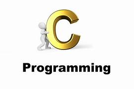
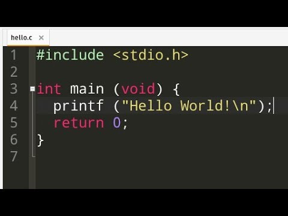

C PROGRAMMING

C is a versatile programming language that can be used in a wide range of applications.
C is used to System Programming, Embedded Systems,Networking and much more.

BRIEF HISTORY OF C
History of C language is interesting to know. Here we are going to discuss a brief history of the c language.
C programming language was developed in 1972 by Dennis Ritchie at bell laboratories of AT&T (American Telephone & Telegraph), located in the U.S.A.
Dennis Ritchie is known as the founder of the c language.
It was developed to overcome the problems of previous languages such as B, BCPL, etc.
How does C Programming Language Work?
Execution of the C program involves 5 steps.
These are:
* Creating the Program
* Preprocessing
* Compiling the Program
* Linking the Program with functions from the C library
*Executing the Program